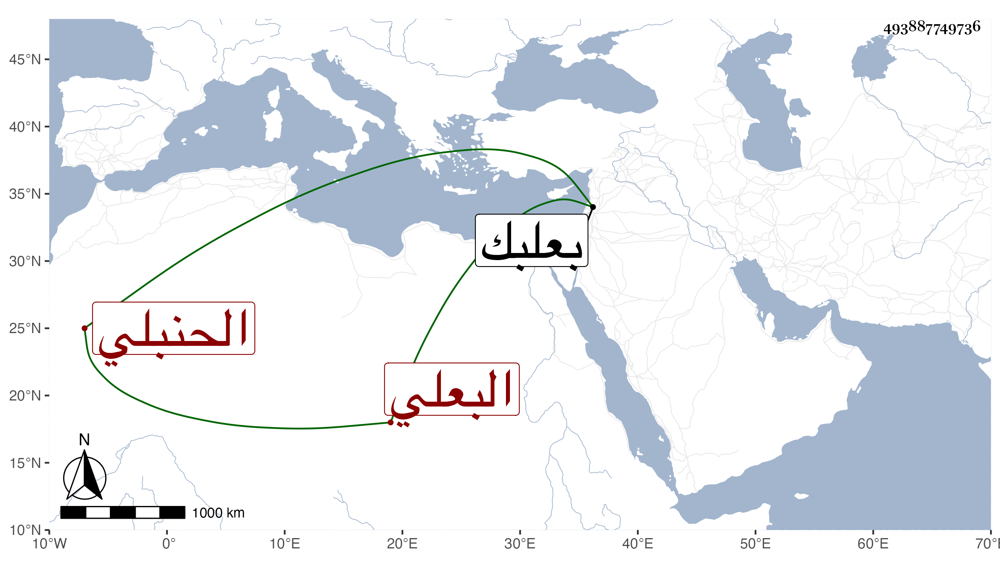

0902Sakhawi.DawLamic.ITO20230111-ara1.EIS1600.493887749736
Biography ID: 493887749736
484
محمد بن علي بن عبد الرحمن بن عبد الله بن غازي البعلي الحنبلي ويعرف بابن الجوف بجيم مفتوحة ثم واو ساكنة وآخره فاء . ولد في سنة خمس وسبعين وسبعمائة وسمع من عبد الرحمن بن الزعبوب الصحيح بل كان يذكر أنه سمعه ايضا على الشمس بن اليونانية والعمادين ابن بردس وابن يعقوب والأمين بن المحب . وحدث أخذ عنه النجم بن فهد وغيره . ومات قبل دخولي بعلبك .
